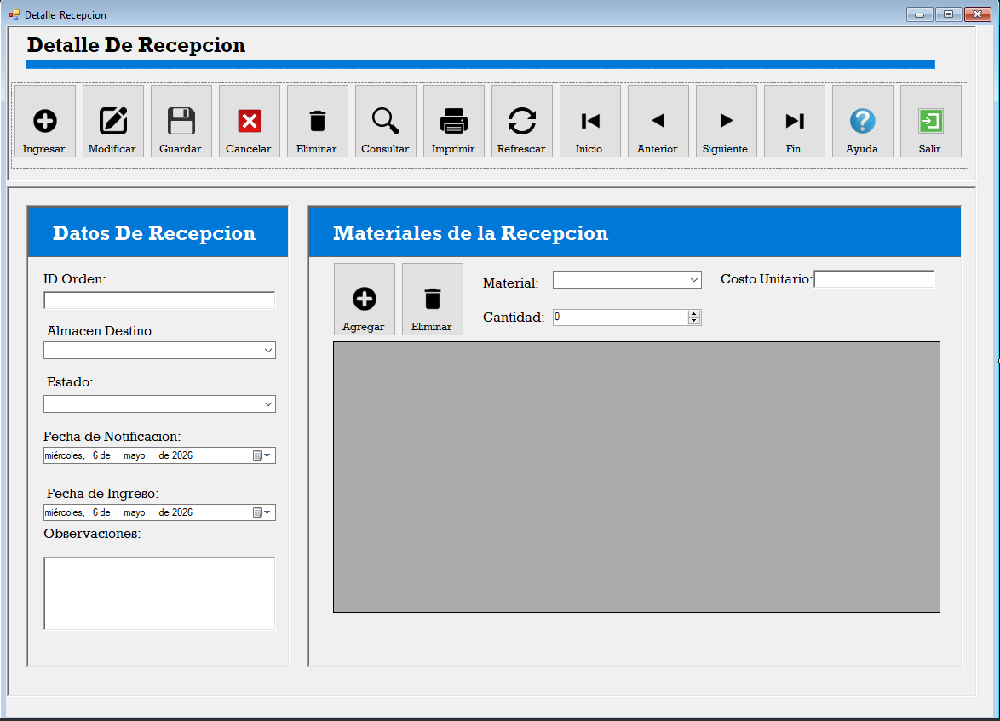
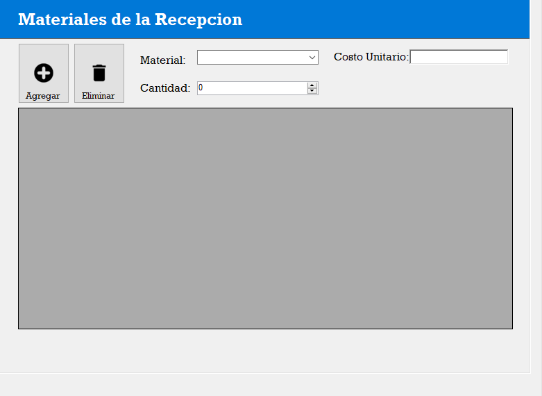
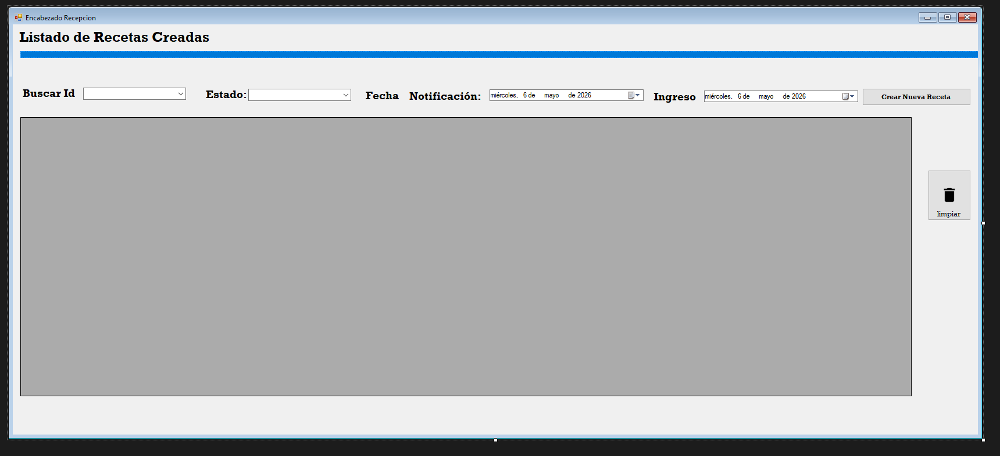

1. Pantalla de detalle de recepción
Esta pantalla permite registrar la información general de una recepción
de materiales y administrar el detalle de materiales recibidos.
Datos de Recepción: contiene información principal como ID de orden,
almacén destino, estado, fechas y observaciones.
Materiales de la Recepción: permite agregar materiales,
cantidad recibida y costo unitario al detalle.

2. Campos principales
-
ID Orden: código externo utilizado por logística
para identificar la recepción.
-
Almacén Destino: almacén donde ingresará el material recibido.
-
Estado: estado actual de la recepción.
Ejemplo: Pendiente, Recibido o Rechazado.
-
Fecha de Notificación: fecha en que logística notificó
la recepción del material.
-
Fecha de Ingreso: fecha en que el material ingresó físicamente al almacén.
-
Observaciones: comentarios adicionales sobre la recepción.
3. Registro de materiales
Para registrar materiales recibidos se debe seleccionar el material,
ingresar la cantidad y el costo unitario.
- Material: material recibido desde logística.
- Cantidad: cantidad recibida del material.
- Costo Unitario: costo individual del material.
- Agregar: agrega el material al listado.
- Eliminar: elimina el material seleccionado del listado.

4. Pantalla de listado y filtros
La pantalla de listado permite visualizar todas las recepciones registradas
y aplicar filtros de búsqueda.
- Buscar ID: permite filtrar por código de recepción.
- Estado: filtra las recepciones según su estado.
- Fecha Notificación: filtra por fecha de notificación.
- Ingreso: filtra por fecha de ingreso al almacén.
- Nueva Recepción: abre la pantalla para registrar una nueva recepción.
- Limpiar: reinicia los filtros y recarga el listado completo.

5. Función de los botones
- Ingresar: habilita el formulario para registrar una nueva recepción.
- Modificar: permite editar información de una recepción existente.
- Guardar: almacena la recepción y sus materiales en la base de datos.
- Cancelar: cancela la operación actual y limpia los campos.
- Eliminar: elimina una recepción previamente registrada.
- Consultar: permite consultar información registrada.
- Imprimir: genera el reporte de recepción.
- Refrescar: actualiza la información mostrada.
- Ayuda: abre este manual de ayuda.
- Salir: cierra la ventana actual.
6. Recomendación de uso
Para registrar correctamente una recepción se recomienda:
- Presionar el botón Ingresar.
- Llenar los datos principales de recepción.
- Agregar uno o varios materiales al detalle.
- Verificar cantidades y costos unitarios.
- Presionar el botón Guardar.